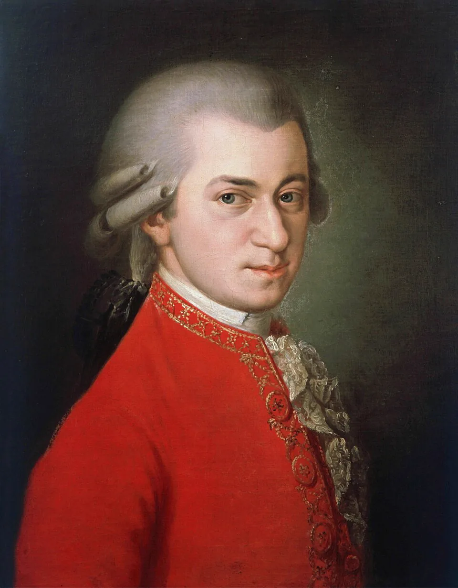
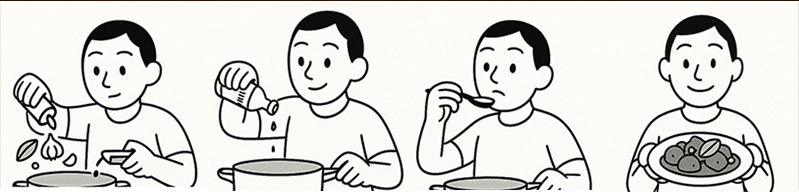

Polyglot Papers · Field-tested method
Build fluency, step by step.
How to learn a language in 3 months?
The truth is less magical—and more useful. Fluency is not built by flipping a calendar. It is built by accumulating the right kind of hours.
Target build · 90-day version
That is the intensive version—not the only valid version.
Lay the foundation
Count hours, not calendar pages.
I'm Aljohn. I study how psychology, biology, and practice shape learning, then pressure-test those ideas myself. My claim is bold: I can build a deep understanding of a language in three months. The missing detail is the commitment behind it.
“What you'll find here isn't just advice. It is field-tested methodology.”
Evidence piece A
Effort over “innate talent”
K. Anders Ericsson and colleagues argued that expert performance is built through prolonged, intense, highly focused effort: deliberate practice. Their work challenged the idea that skill is simply a mystical gift.
The famous 10-year or 10,000-hour figure concerns elite expertise—not the number of hours required to become a capable language user. Genetics can matter in some fields, but specific skills are still built through work.
Read Ericsson et al. (1993) (opens in a new tab)Same starting line · different input
Evidence piece B
The path to mastery, by age 18.
Ericsson's violin studies showed different totals of accumulated solitary practice. The quantity mattered, but so did the quality, focus, and goal of the work.
Echoes of effort
Different craft. Same pattern.
These examples from the original essay are not proof of one universal hour rule. They illustrate repeated routines, specific training, early starts, and sustained correction across fields.

Wolfgang A. Mozart
Intensive lessons, composition, touring, and thousands of hours from childhood shaped the prodigy behind the legend.
Michael Jordan
Setbacks became fuel for drilling weaknesses, fundamentals, and difficult shots beyond team practice.
Carlos Yulo
Years of five-to-six-hour training days refined complex movement into championship precision.
Kobe Bryant
Pre-practice workouts, often before sunrise, made extra repetitions part of the Mamba mentality.
Cristiano Ronaldo
Skill work, physical training, recovery, diet, and mental preparation form one disciplined system.
Tiger Woods
An early start and long course-and-range sessions accumulated across a career of refinement.
Aljohn's rule of thumb
Choose a target piece.
These are my personal estimates for reaching a decent level. A related language may take less time once you already know one from the same family.
 Spanish
Spanish French
French Italian
Italian Portuguese
Portuguese Indonesian
Indonesian Swedish
Swedish
 German
German
 Russian
Russian
After one Romance language, the next might take me closer to 400, then 300 hours. This is a planning model, not a universal guarantee.
The five-minute fallacy
Small habits help. Tiny input cannot defeat the math.
Five minutes a day can keep a habit alive, but it takes about 6,000 days to accumulate 500 hours. And the total alone is not enough: those hours still need focus, feedback, and meaningful use.
Assemble the engine
Make every hour deliberate.
If you have been “learning” for years with little to show, the problem may be how you practice. Deliberate practice makes the work specific, difficult, responsive, and repeatable.
Before assembly
Are you practicing—or only playing?
- Streak or real use?Would you hesitate to order food or ask for directions outside the app?
- List or context?Do you meet words once, or hunt them in authentic full sentences?
- English subtitles or active listening?Are you moving toward target-language subtitles—or none?
- Thinking or output?Do you regularly speak to yourself, AI, or language partners even when it is messy?
Deliberate practice is purposeful and systematic: focused attention with the specific goal of improving performance, not mindless repetition.
Adapted from James Clear's explanation (opens in a new tab)
Purpose
Do not merely keep a streak. Train a real ability: order food, follow a podcast, write an argument, or hold a conversation.
Full focus
Hunt unfamiliar language in authentic content. Save full-sentence context. Work at the edge of what you can understand.
Feedback
Record yourself, compare with natives, request concrete corrections, and apply them. A caught mistake becomes a free lesson.
Refinement
Repeat without becoming mindless. Revisit vocabulary and grammar in new contexts so each encounter deepens the connection.
Pressure fit: if it always feels easy, the build is not growing. Move from learner material toward a native novel, documentary, or conversation that stretches you.

The adobo test
Practice should taste different after feedback.
Season, stir, taste, adjust. If every repetition is identical, you are only rehearsing the same errors. Deliberate repetition changes after each result.
What the build unlocks
The language stops feeling like an exercise.
- 01Native media starts to click without constant translation.
- 02Reading becomes pleasure, not only decoding.
- 03Ideas and jokes begin to flow naturally.
- 04Your internal monologue can switch languages.
- 05Conversations become genuine connection, not grammar drills.
Understand the scale
A native speaker grows inside an ocean.
My hour estimates describe focused second-language learning. A native speaker, by contrast, is surrounded by language from birth—in conversation, play, school, stories, media, and overheard life.
Diagram uses a compressed scale so the 500-hour marker remains visible.
My research synthesizing work on infant sleep, waking hours, child-directed speech, parent-child interaction, and schooling produced that broad estimate. It includes direct conversation as well as language embedded in ordinary life.
That colossal difference helps explain why a few words a day can feel painfully slow on the road to native-like ease. Focused practice helps an adult build a foundation faster; immersion gives that foundation a world to live in.
Read the full research PDFRun the final check
So—is three months possible?
For a 500-hour target across roughly 90 days, the answer is mathematically clear: about 5 hours and 34 minutes of deliberate practice every day.
That is what makes the method possible. It is also what makes it intense. Personally, my daily average was often 8–12 hours. The headline makes sense only when the workload stays attached to it.
Build your version
Your schedule is the final piece.
Choose a target and a sustainable daily commitment. The method stays the same; the calendar expands or contracts.
Estimated completion
250 daysAbout 8.2 months at 2 hours every day.
- Weekly load
- 14 hours
- 90-day total
- 180 hours
- Finish date
- —
No race required
What if you do not have five hours a day?
Then take longer. The methods are here; the timeframe belongs to you. Three months can be an intense sprint, or the same principles can support a steady three-year build.
“Hindi naman ito karera, pwedeng magdahan-dahan.”
BINI, “Karera”